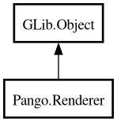

Renderer
Object Hierarchy:

Description:
[
CCode ( type_id =
"pango_renderer_get_type ()" ) ]
[
Version ( since =
"1.8" ) ]
public abstract class Renderer :
Object
Content:
Creation methods:
Methods:
- public void activate ()
- public virtual void begin ()
- public void deactivate ()
- public virtual void draw_error_underline (int x, int y, int width, int height)
- public virtual void draw_glyph (Font font, Glyph glyph, double x, double y)
- public virtual void draw_glyph_item (string? text, GlyphItem glyph_item, int x, int y)
- public virtual void draw_glyphs (Font font, GlyphString glyphs, int x, int y)
- public void draw_layout (Layout layout, int x, int y)
- public void draw_layout_line (LayoutLine line, int x, int y)
- public virtual void draw_rectangle (RenderPart part, int x, int y, int width, int height)
- public virtual void draw_shape (AttrShape attr, int x, int y)
- public virtual void draw_trapezoid (RenderPart part, double y1_, double x11, double x21, double y2, double x12, double x22)
- public virtual void end ()
- public uint16 get_alpha (RenderPart part)
- public unowned Color? get_color (RenderPart part)
- public unowned Layout? get_layout ()
- public unowned LayoutLine? get_layout_line ()
- public unowned Matrix? get_matrix ()
- public virtual void part_changed (RenderPart part)
- public virtual void prepare_run (LayoutRun run)
- public void set_alpha (RenderPart part, uint16 alpha)
- public void set_color (RenderPart part, Color? color)
- public void set_matrix (Matrix? matrix)
Inherited Members:
All known members inherited from class GLib.Object